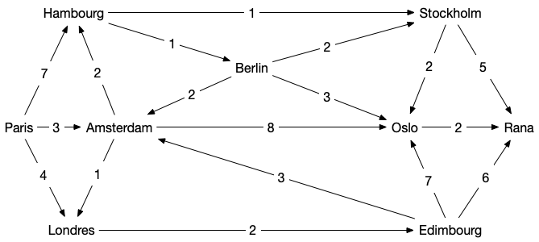

Algorithme de Dijkstra
- François Brucker
Chemins de longueur minimum entre deux sommets pour un graphe orienté pour une valuation positive.
L'algorithme de Dijkstra permet, à partir d'un graphe orienté valué positivement, de trouver un chemin de longueur minimum entre deux sommets $d$ (départ) et $a$ (arrivée).
Principe
L'algorithme de Dijkstra cherche à créer un arborescence à partir d'un graphe initial $G$. Précisons cela.
Définition
Soit $G =(V, E)$ un graphe orienté, $f$ une valuation positive des arcs de $G$ et $x$ un sommet du graphe. Une arborescence $T_{x} = (V', E')$ est un graphe tel que :
- $x \in V'$
- $V' \subseteq V$ et $E' \subseteq E$
- il existe un chemin $c^T_{xy}$ unique entre $x$ et $y$ dans $T_{x}$ por tout sommet $y \in V'$
- pour tout $y \in V'$, tout chemin $c^G_{xy}$ entre $x$ et $y$ dans $G$ est tel que $f(c^G_{xy}) \geq f(c^T_{xy})$ : le chemin dans $T_x$ est minimum
Par exemple :

La définition d'une arborescence garantit le fait que tout ses chemins sont de poids minimum pour $G$. Remarquez de plus que pour tout graphe orienté $G$, il existe au moins une arborescence pour chacun de ses sommets puisque $T_{x} = (\{x\}, \varnothing)$ en est une quelque soient $x$ et $G$.
Enfin, la proposition suivant montre que l'on peut faire grossir les arborescences :
Proposition
Soit $G =(V, E)$ un graphe orienté valué par une fonction positive $f$. Et $T_x = (V', E')$ une de ses arborescence.
Si :
$$
W = \{ uv \mid uv \in E, u \in V', v \in V \backslash V' \}
$$
N'est pas vide alors il existe un arc $u^\star v^\star \in W$ tel que :
$$f(c^T_{xu}) + f(u^\star v^\star) = \min_{uv \in W}(f(c^T_{xu}) + f(uv))$$
Et
$$
T' = (V' \cup \{v^\star\}, E' \cup \{ u^\star v^\star \})
$$
est également une arborescence de $G$
preuve
preuve
Comme on ne rajoute qu'un arc à $E'$ pour créer $E''$, il ne peut exister qu'un seul chemin pour aller de $x$ à un autre sommet $y$ de $G'' =(V'', E'')$.
Il nous reste à prouver que le chemin pour aller de $x$ à $v^\star$ dans $G''$ est bien un chemin de poids minimum dans $G$. Pour cela, supposons qu'il existe un autre chemin entre $x$ et $v^\star$ dans $G$. Comme $x \in V''$, on peut noter $w$ le premier sommet de ce chemin qui n'est pas dans $V'$. Comme $w \neq v^\star$ (sinon les deux chemins seraient identiques) on se retrouve dans le cas de la figure ci-dessous :

Le poids du chemin en pointillé de $x$ à $w$ est par construction plus grand que le poids du chemin allant de $x$ à $v^\star$ (en trait plein). Comme les poids sont positifs, le chemin en pointillé de $x$ à $v^\star$ est donc de poids supérieur à celui en trait plein.
Le principe de l'algorithme de Dijkstra qui cherche un plus court chemin entre deux sommets $x$ et $y$ d'un graphe orienté valué par une fonction positive $f$ est alors :
- partir de l’arborescence $T_{x} = (\{x\}, \varnothing)$
- tant que $W = \{ uv \mid uv \in E, u \in V', v \in V \backslash V' \}$ est non vide faire grossir l’arborescence
- si le dernier sommet ajouté est $y$, l'algorithme s'arrête et rend le chemin entre $x$ et $y$ dans l'arborescence
L'implémentation naïve de cet algorithme serait cependant d'une complexité importante car on recalculerait trop souvent les mêmes choses.
Implémentation
L'idée de l'algorithme de Dijkstra est d'implémenter le principe précédent de façon optimale.
Pseudo-code
On cherche à trouver un plus court chemin entre deux sommets, nommées départ et arrivé, d'un graphe orienté $G$ valué par une fonction positive $f$.
Entrées :
Un graphe G=(V,E)
une fonction de coût f positive
Initialisation :
prédécesseur[départ] = départ # pour retrouver les chemins
coût[départ] = 0 # distances
coût[u] = +∞ pour tous les autres sommets u
V_prim = {départ} # les sommets de l'arborescence
pivot = départ # pivot est le dernier élément ajouté à l'arborescence
Algorithme :
tant que pivot ≠ arrivé :
# mise à jour des coûts
pour tous les voisins x de pivot dans G qui ne sont pas dans V_prim :
si coût[x] > coût[pivot] + f(pivot, x):
coût[x] = coût[pivot] + f(pivot, x)
prédécesseur[x] = pivot
# ajout d'un élément à la structure
soit u un élément de V \ V_prim tel que coût[u] soit minimum
pivot = u
ajoute pivot à V_prim
# restitution du chemin (pivot = arrivé au départ)
chemin = []
x = pivot
tant que x ≠ départ:
ajoute x au début de chemin
x = prédécesseur[x]
Retour :
chemin
A chaque étape on ajoute un nouveau sommet de la frontière (un sommet dont le coût est non infini, c'est à dire un sommet $y \notin V'$ tel qu'il existe $x \in V'$ et $xy \in E$) à la structure que l'on appelle pivot
L'astuce est de voir que si l'on stocke les coûts, on a uniquement besoin de les mettre à jour lorsque l'on ajoute un nouveau sommet dans la structure :

Python
Une implémentation en python en utilisant le codage par dictionnaire des graphes et une valuation également codée par un dictionnaire dont les clés sont les arcs et les valeurs la valuation est donnée ci-après :
def dijkstra(G, f, départ, arrivé):
prédécesseur = {départ: départ}
coût = {départ: 0}
V_prim = {départ}
pivot = départ
while pivot != arrivé:
for x in G[pivot]:
if x in V_prim:
continue
if (x not in coût) or (
coût[x] > coût[pivot] + f[(pivot, x)]
):
coût[x] = coût[pivot] + f[(pivot, x)]
prédécesseur[x] = pivot
new = None
for x in G:
if (x in V_prim) or (x not in coût):
continue
if (new is None) or (coût[new] > coût[x]):
new = x
pivot = new
V_prim.add(pivot)
chemin = [arrivé]
x = arrivé
while x != départ:
x = prédécesseur[x]
chemin.append(x)
chemin.reverse()
return chemin
L'algorithme précédent peut être décomposé en plusieurs parties :
- initialisation (lignes 2 à 4) :
prédécesseuretcoût_entréesont des dictionnaires etV_primun ensemble - boucle principale, qui correspond au
while(lignes 6 à 27). Cette boucle est composée de deux parties :- mise à jour (lignes 8 à 16) : on considère tous les voisins de
pivotqui ne sont pas encore dansV_prim(test des lignes 9 et 10) et on les met à jour si nécessaire (lignes 12 à 16) : soit on les découvre pour la première fois (x not in coût_entrée) soit on à mieux (coût_entrée[x] > coût_entrée[pivot] + f[(pivot, x)]) - recherche d'un nouveau
pivot(lignes 18 à 27) : on choisit un sommet non encore examiné de coût d'entrée le plus faible - la boucle principale s'arrête une fois que l'on choisi l'arrivé comme
pivot
- mise à jour (lignes 8 à 16) : on considère tous les voisins de
- construction du chemin (lignes 29 à 34) : on remonte de prédécesseur en prédécesseur en partant de
arrivéjusqu'à remonter endépart.
Déroulement de l'algorithme
Avant de voir comment il fonctionne, testez le. Le graphe ci-après représente les différents vols et leurs durées entre différentes villes d'Europe :

Le codage en python est alors le suivant pour le graphe :
G = {
"Paris": {"Hambourg", "Amsterdam", "Londres"},
"Hambourg": {"Stockholm", "Berlin"},
"Amsterdam": {"Hambourg", "Oslo", "Londres"},
"Londres": {"Édimbourg"},
"Stockholm": {"Oslo", "Rana"},
"Berlin": {"Stockholm", "Amsterdam", "Oslo"},
"Oslo": {"Rana"},
"Édimbourg": {"Amsterdam", "Oslo", "Rana"},
"Rana": set(),
}
Et la fonction de valuation positive :
f = {
("Paris", "Londres"): 4,
("Paris", "Amsterdam"): 3,
("Paris", "Hambourg"): 7,
("Hambourg", "Stockholm"): 1,
("Hambourg", "Berlin"): 1,
("Amsterdam", "Londres"): 1,
("Amsterdam", "Hambourg"): 2,
("Amsterdam", "Oslo"): 8,
("Londres", "Édimbourg"): 2,
("Stockholm", "Rana"): 5,
("Stockholm", "Oslo"): 2,
("Berlin", "Stockholm"): 2,
("Berlin", "Amsterdam"): 2,
("Berlin", "Oslo"): 3,
("Oslo", "Rana"): 2,
("Édimbourg", "Rana"): 6,
("Édimbourg", "Amsterdam"): 3,
("Édimbourg", "Oslo"): 7,
}
Faites un déroulé séquentiel de l'algorithme. Dans quel ordre les sommets sont-ils ajoutés dans V_prim ?
solution
solution
Les différentes étapes de l'algorithme sont représentées dans les graphes ci-dessous.
- La figure se lit de gauche à droite et de haut en bas.
- les sommets de
V_primsont encadrés en vert - en orange les valeurs de
prédécesseuret decoût_entrée - en magenta
pivotet les modifications deprédécesseuret decoût_entrées'il y en a

Preuve
Proposition
Pour un graphe orienté valué positivement $(G, f)$ et deux sommet $a$ et $b$ de $G$, l'algorithme de Dijkstra rend un chemin élémentaire de longueur minimum entre $a$ et $b$ (s'il existe).
solution
solution
On montre par récurrence qu'à chaque étape le chemin de départ à pivot constitué en remontant les prédécesseurs de pivot jusqu'à arriver à départ est de longueur minimale et de coût coût_entrée[pivot].
Au départ pivot = départ, la propriété est donc vraie. On la suppose vrai jusqu'à l'itération $i$ (qui correspond au fait que l'on ait $i$ sommets dans V_prim). A l'étape $i+1$, on a choisi pivot qui minimise le coût d'entrée parmi tous les sommets qui ne sont pas encore dans V_prim.
Comme tous les chemins alternatifs entre départ et pivot commencent en départ, il existe un arc de ce chemin dont le départ (disons $u$) est dans V_prim et l'arrivée (disons $v$) n'y est pas. Prenons la première arête $uv$ pour laquelle ça arrive.
Par hypothèse de récurrence, coût_entree[u] est le coût minimum d'un chemin entre départ et $u$ et coût_entree[v] est donc plus grand que coût_entree[u] + f[uv] (on a examiné ce cas lorsque l'on a fait rentrer $u$ dans V_prim) et de coût_entree[pivot] (car c'est le min).
De là, le coût du chemin alternatif est plus grand également que coût_entree[pivot] car toutes les valuations sont positives : notre hypothèse est vérifiée.
Complexité
Proposition
La complexité de l'algorithme de Dijkstra est en $\mathcal{O}(\vert E\vert + (\vert V \vert)^2)$
preuve
preuve
On ajoute à chaque étape un élément, donc il y a au pire $\vert V \vert$ étapes. A chaque choix on compare les voisins de pivot. Ces comparaisons sont donc de l'ordre de $\mathcal{O}(\delta(\mbox{pivot}))$ opérations. Comme pivot est différent à chaque étape, toutes ces comparaisons sont de l'ordre de $\mathcal{O}(\sum\delta(\mbox{pivot})) = \mathcal{O}(\vert E \vert)$ opérations.
On prend ensuite le minimum parmi les éléments de V_prim, ce qui prend $\mathcal{O}(\vert V \vert)$ opérations.
La complexité totale est alors en :
\[ \mathcal{O}(\underbracket{\vert E\vert}_{\mbox{mises à jour du coût d'entrée}} + \underbracket{(\vert V \vert)^2}_{\vert V \vert \mbox{ choix de pivot}}) \] <\p>
Corollaire
En déduire que la complexité de l'algorithme de Dijkstra est en $\mathcal{O}(\vert V \vert^2)$
preuve
preuve
Clair puisque $\vert E \vert \leq \vert V \vert)^2$.
On le voit dans la preuve de la proposition, le facteur limitant est la partie en $\mathcal{O}(\vert V \vert^2)$ qui n'est pas linéaire en la taille du graphe (en mémoire un graphe occupe de l'ordre de $\mathcal{O}(\vert E \vert + \vert V \vert)$ cases). Celle ci concerne le choix du nouveau pivot en cherchant un minimum de coût_entree. En optimisant cette opération, on peut drastiquement diminuer la complexité de l'algorithme.
Une optimisation classique est d'utiliser un tas pour trouver le min. On a alors que :
- une complexité de $\mathcal{O}(1)$ pour prendre un minimum
- une complexité de $\mathcal{O}(\log_2(M))$ où $M$ est le nombre d'éléments du tas pour mettre à jour la structure après chaque modification. Comme il va y a voir au maximum $V$ éléments dans ce tas, on peut borner cette complexité par $\mathcal{O}(\log_2(\vert V \vert))$
Enfin :
- il y a de l'ordre de $\mathcal{O}(\vert V \vert)$ prise de minimum : à chaque choix de
pivot - il y a de l'ordre de $\mathcal{O}(\vert E \vert)$ modifications : à chaque modification de
coût_entree
On a donc une complexité de choix de pivot qui passe alors de $\mathcal{O}(\vert V \vert^2)$ à $\mathcal{O}(\vert E \vert \log_2(\vert V \vert))$.
- S'il y a peu d'arcs, disons $\vert E \vert = \mathcal{O}(\vert V \vert)$, c'est beaucoup mieux puisque l'on a alors une complexité de : $\mathcal{O}((\vert V \vert)\log_2(\vert V \vert))$
- S'il y a beaucoup d'arcs, disons $\vert E \vert = \mathcal{O}(\vert V \vert^2)$, c'est un peu moins bon puisque l'on a alors une complexité de : $\mathcal{O}((\vert V \vert)^2\log_2(\vert V \vert))$
La complexité de Dijkstra avec un tas est alors : $\mathcal{O}(\vert E \vert + (\vert E \vert + \vert V \vert)\log_2(\vert V \vert))$ ce qui est égal à $\mathcal{O}((\vert E \vert + \vert V \vert)\log_2(\vert V \vert))$ qui est beaucoup mieux que l'implémentation naïve si le graphe est peu dense et un peu moins bonne dans le cas où le graphe est dense.
Il faut souvent en algorithmie choisir l'algorithme ou l'implémentation de l'algorithme en fonction des données que l'on aura à traiter. Il n'y a que très rarement des solutions meilleurs dans tous les cas.
Comme souvent les graphes sont peu dense lorsque l'on cherche un chemin de poids min — pensez à google maps où il y a bien peu de routes par rapport aux nombre d'endroit où l'on peu aller — on utilise souvent cette implémentation.
La page wikipédia précise qu'en utilisant un tas amélioré, dit tas de Fibonacci, on arrive même à faire descendre la complexité totale à $\mathcal{O}(\vert E \vert + \vert V \vert\log_2(\vert V \vert))$, ce qui est du coup tout le temps mieux que la prise de minimum naïve, mais nécessite une structure bien plus compliquée.
Arborescence
On peut continuer l'algorithme de Dijkstra après que $y$ ait été rentré dans V_prim et s'arrêter lorsque l'on a plus que des éléments de coût infini à faire rentrer dans V_prim ou que V_prim soit égal à $V$.
Montrez que pour tous les sommets $x$ qui ne peuvent pas entrer dans V_prim, il n'existe pas de chemin entre départ et $x$ dans $G$
solution
solution
A chaque fois que l'on ajoute un élément dans V_prim on vérifie tous ses voisins pour mettre à jour le coût d'entrée dans la structure. On procède comme le parcours en largeur et on a montré qu'il trouvait la composante connexe de sa racine.
Montrez que si l'on peut continuer l'algorithme de Dijkstra jusqu'à ce que $V'$ soit égal à $V$ on obtient un graphe $G' = (V, E')$ tel que :
- $\vert E' \vert = \vert V \vert -1$
- il existe un unique chemin entre $d$ et tout autre sommet
- le chemin entre $d$ et $x$ dans $G'$ est de poids minimum dans $G$
solution
solution
Cette preuve dérive directement de la preuve de l'algorithme de Dijkstra que l'on a fait précédemment.
$A^\star$
Un algorithme beaucoup utilisé lorsque le graphe peut changer ou s'il est très grand, voir inconnu (un terrain de jeu) est l'algorithme $A^\star$, qui est une variante de l'algorithme de Dijkstra qui accélère la procédure de choix en sacrifiant l'optimalité : on obtient alors rapidement une solution acceptable plutôt qu'obtenir lentement une solution optimale.
Son principe est identique à celui de Dijkstra, mais plutôt que de prendre à chaque fois l'élément de coût minimum on choisit un élément dont le coût + une distance heuristique $h$ sur sa distance à l'arrivée est minimum. Son pseudo-code est donc identique à celui de Dijkstra à part l'ajout d'un élément à la structure (lignes 23 à 27) qui devient :
# ajout d'un élément à la structure
soit u un élément de V \ V_prim tel que coût[u] + h(u) soit minimum
pivot = u
ajoute pivot à V_prim
Cette modification est faite pour considérer moins de sommets que Dijkstra (on ne va pas choisir de sommets inutiles) en estimant la coût qu'il reste à parcourir pour aller de $x$ à l'arrivée.
Notez que si l'heuristique vaut $0$ pour tout sommet, $A^\star$ est exactement l'algorithme de Dijkstra et il trouvera toujours un chemin de poids minimum. On peut montrer que $A^\star$ trouvera aussi des chemins de poids minimum pour des heuristiques particulières :
Propriétés
L'heuristique $h$ est dite consistante si $h(x) \leq f(c) + h(y)$ pour tout sommet $x$, tout sommet $y$ et $c$ un chemin de poids minimum entre $x$ et $y$
Si $h$ est consistante alors $A^\star$ trouvera un chemin de poids minimum.
preuve
preuve
TBD : mettre un dessin explicatif. et peut-être expliquer mieux.
Procédons par l'absurde. Soit la première étape où l'on choisit de rentrer dans $V'$ un sommet $u$ tel que $\mbox{coût}[u]$ est strictement plus grand que le poids d'un chemin de poids minimum entre $\mbox{départ}$ et $u$. Il existe alors un chemin $c$ allant $\mbox{départ}$ à $u$ de poids plus petit. Soit $u$' le premier élément de ce chemin qui n'est pas dans $V'$. Alors :
- $u'$ est le premier élément à sortir de $V'$. Si $p'$ est son prédécesseur dans $c$ on a $\mbox{coût}[p'] + f(p', u') \geq \mbox{coût}[u']$ par construction de l'algorithme.
- $c$ est de poids minimum, c'est donc aussi un chemin de poids minimum pour aller de $\mbox{départ}$ à $p'$
- le coût de tous les éléments $x$ de $V'$ est égal au poids minimum d'un chemin allant de $\mbox{départ}$ à $x$ : $\mbox{coût}[p']$ vaut le poids de $c$ de $\mbox{départ}$ à $p'$
- $\mbox{coût}[p'] + f(p', u')$ est égal au coût d'un chemin de poids minimum entre $\mbox{départ}$ à $u'$
- $\mbox{coût}[u']$ est égal au coût d'un chemin de poids minimum entre $\mbox{départ}$ à $u'$
De plus, comme $u'$ n'a pas été choisit à cette étape on a :
$$
\mbox{coût}[u'] + h(u') \geq \mbox{coût}[u] + h(u)
$$
Comme notre hypothèse est que $f(c) < \mbox{coût}[c]$ on a :
$$
\mbox{coût}[u'] + h(u') \geq \mbox{coût}[u] + h(u) > f(c) + h(u)
$$
En notant $c'$ la fin du chemin $c$ qui commence par $u'$, on a $f(c) = \mbox{coût}[u'] + f(c')$ et donc :
$$
\mbox{coût}[u'] + h(u') > f(c) + h(u) = \mbox{coût}[u'] + f(c') + h(u)
$$
On en déduit que :
$$
h(u') > f(c') + h(u)
$$
Ce qui est impossible car $h$ est consistante.
La proposition suivante montre que l'on peut donner une définition locale de consistance, qui donne un moyen simple de vérifier ou de construire une heuristique consistante :
Une heuristique $h$ est consistante si et seulement si pour tout arc $uv$ on a :
$$
h(u) \leq f(uv) + h(v)
$$
preuve
preuve
Comme $f(c) \leq f(uv)$ avec $c$ est un chemin de poids minimum entre $u$ et $v$ un sens de qu'équivalence est prouvé.
Réciproquement, soit $c = x_0\dots x_{k-1}$ un chemin tel que $h(x_i) \leq f(x_{i}x_{i+1}) + h(x_{i+1})$. On en déduit que $h(x_0) \leq \sum_{i} f(x_{i}x_{i+1}) + h(x_{k-1})$ ce qui conclut la preuve.
Un exemple d'utilisation classique est le parcours d'un robot, d'une voiture, d'un personnage de jeu vidéo, etc dans un espace à 2 dimensions.
Proposez une implémentation de l'algorithme $A^*$ qui trouvera un chemin de poids minimum pour le parcours dans une salle d'un petit robot.
solution
solution
- On peut prendre comme graphe la grille 2D carré de pas 1m par exemple
- s'il y a des murs on ne met pas d'arêtes
- l'heuristique sera la distance entre la position et l'arrivée. Qui est consistante.
Avant de conclure cette partie, donnons une autre condition pour qu'$A^\star$ donne un chemin de poids minimum.
Une heuristique $h$ est dite admissible si $h(x)$ est plus petite que le poids d'un chemin minimum entre $x$ et $\mbox{arrivée}$ pour tout sommet $x$.
Si l’heuristique de $A^\star$ est admissible et qu'à chaque étape de l'algorithme il existe un chemin de poids minimum entre $\mbox{départ}$ et $\mbox{arrivé}$ tel que si deux voisins sont dabs $V'$ alors l'arc est dans l'arborescence alors $A^\star$ trouvera un chemin de poids minimum.
preuve
preuve
Voir https://en.wikipedia.org/wiki/Admissible_heuristic et en particulier la preuve de l'optimalité.
Notez que admissible est une condition plus faible que la consistance : Elle ne garantie pas à elle seule l'optimalité de l'algorithme. Considérez le graphe suivant qui contient un unique chemin de poids minimum entre $\mbox{départ}$ et $\mbox{arrivé}$ :

L'heuristique admissible mais non consistante suivante : $h(\mbox{départ}) = h(\mbox{arrivée}) = h(v) = 0$ et $h(u) = 3$, $A^\star$ ne trouvera pas la bonne solution (le chemin passant pas $u$ est détruit lorsque l'on met $v$ dans l'arborescence).
Il est possible de rendre l'algorithme $A^\star$ optimal en utilisant uniquement une heuristique admissible, mais au prix d'une complexité potentiellement exponentielle.
comment faire
comment faire
- mettre à jour tous les voisins à chaque itération et pas uniquement ceux qui ne sont pas dans
V_prim - si on met à jour un sommet dans
V_primil faut supprimer deV_primtout son sous-arborescence - choisir le nouveau pivot se fait dans l'ensemble $\{ v \mid uv \in E, u \in V', v \notin V' \}$
Les 3 mécanismes ci-dessus assurent qu'il existe toujours un chemin de poids minimum accessible, mais $A^\star$ peut effectuer un nombre exponentiel d'opérations. Bref, le coût de l'optimalité est très cher, autant utiliser Dijkstra.
On préférera parfois utiliser des heuristique non consistantes voir non admissible (sans changer $A^\star$) si cela permet d'aller plus vite. Cette approche est particulièrement utilisées dans une grande variété de cas d'applications où il est plus important d'aller vite que d'être exact : comme dans les jeux vidéos par exemple où on utilise cet algorithme dans le pathfinding par exemple.
Chemin de poids minimum n'est pas équivalent à chemin de poids maximum
Penser que renverser les inégalités dans l'algorithme de Dijkstra (de rentrer dans la structure à chaque fois l'élément de plus grand coût), permet de trouver un chemin le plus long est une faute.
Donnons un exemple. Le graphe suivant avec une valuation de 1 sur tous les arc :

Le chemin de longueur maximum entre $1$ et $2$ est $132$. L'algorithme où l'on renverse toutes les inégalités trouvera ce chemin si les sommets sont examinés dans l'ordre $1$, $3$ puis $2$, mais il ne le trouvera pas si les sommets sont rentrés dans V_prim dans l'ordre 1, 2, 3 (ce qui est possible).
Même s'il existe des cas où l'algorithme de Dijkstra trouvera le chemin le plus long, il en existe d'autres où il ne le trouvera pas...